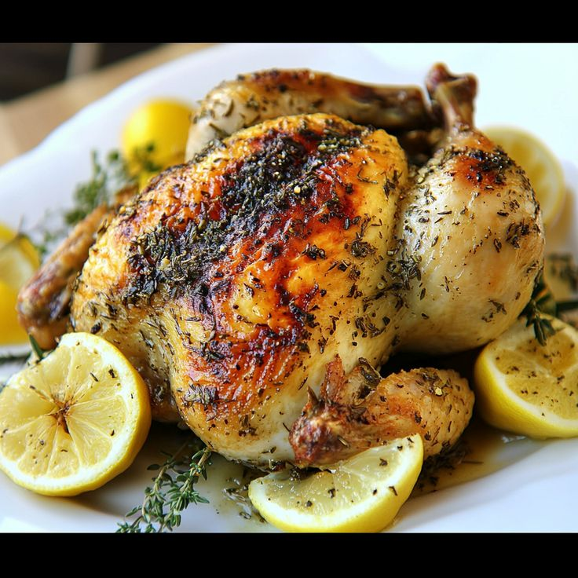
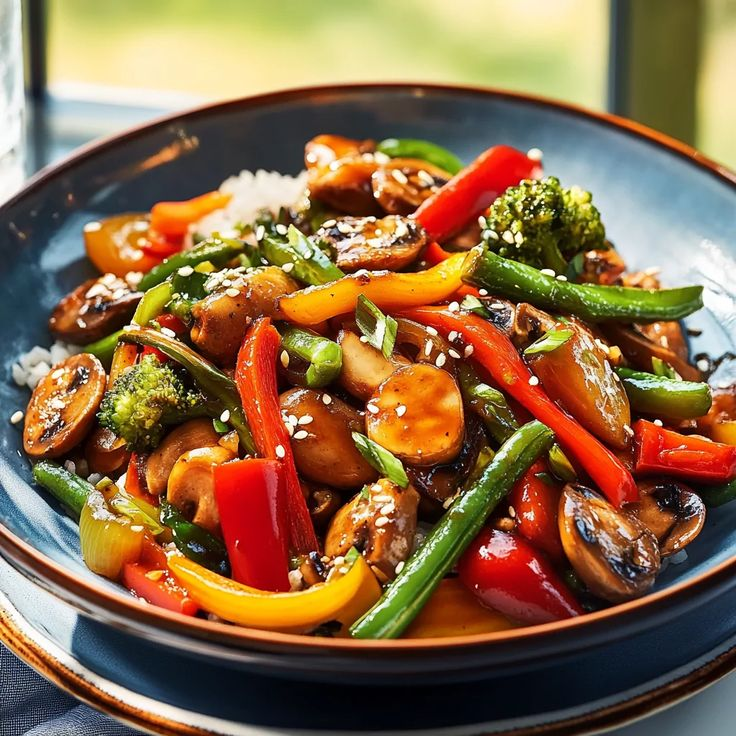
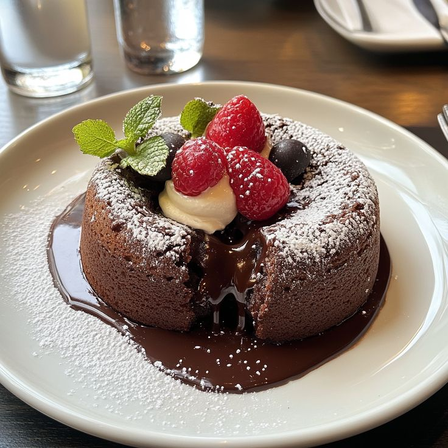
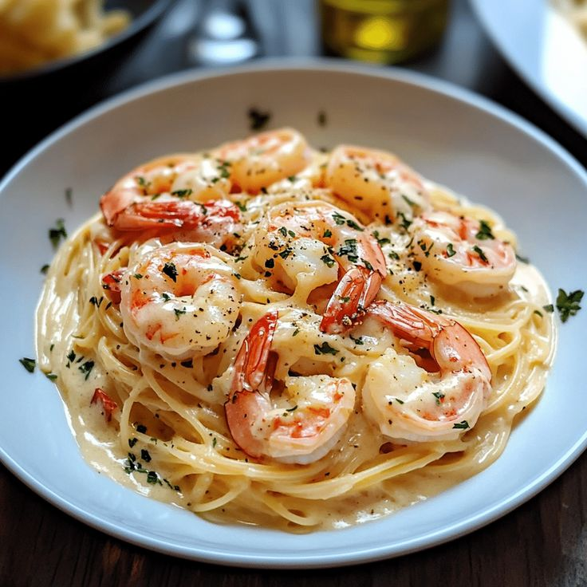
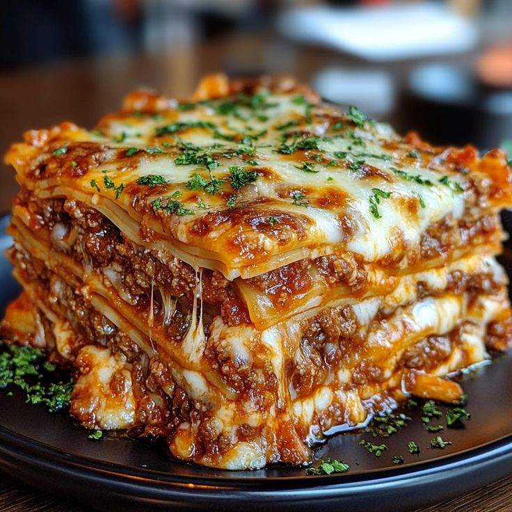
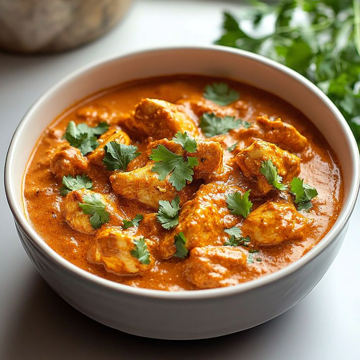
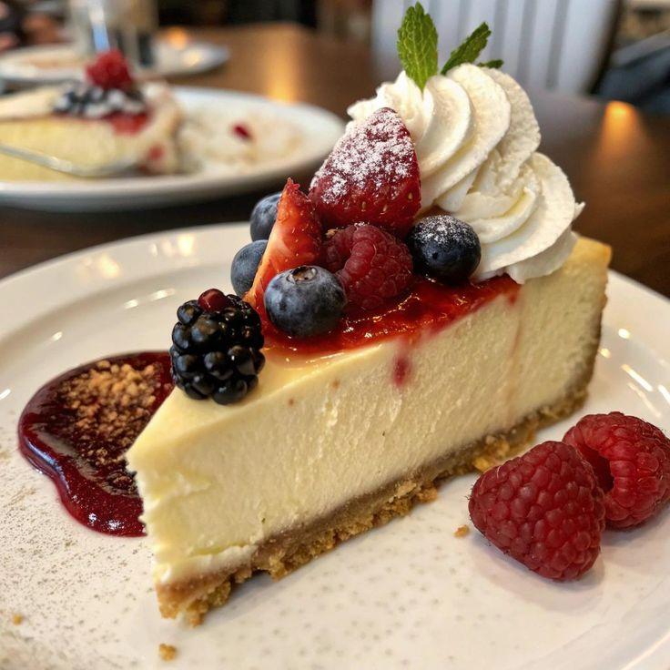
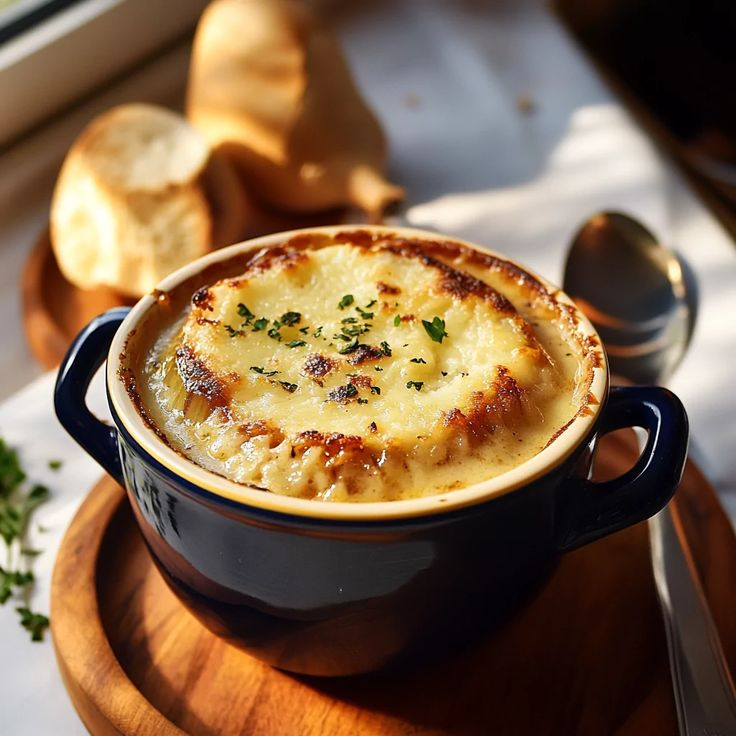
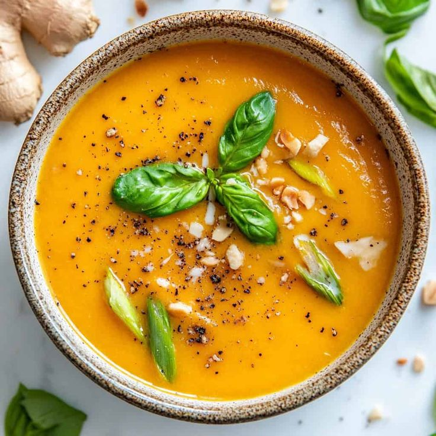
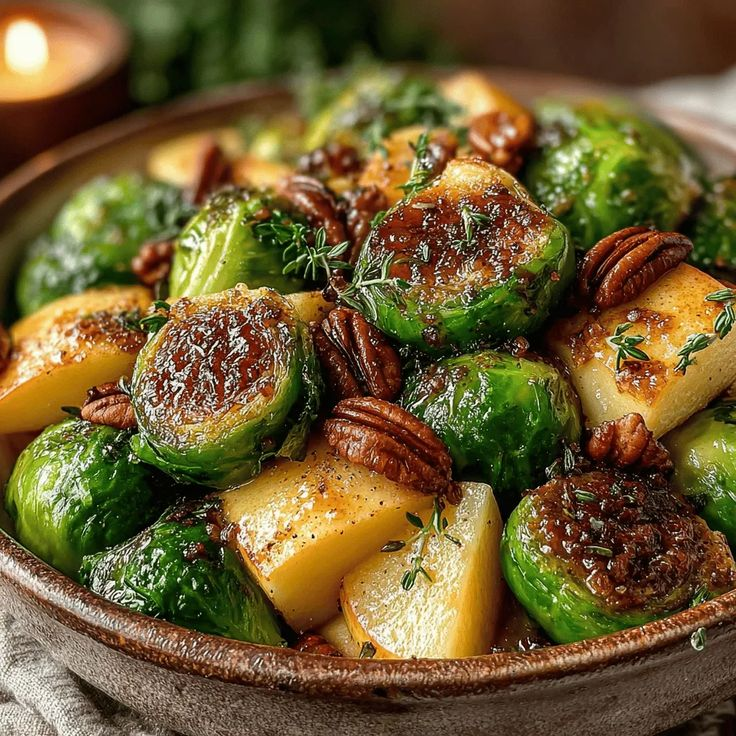

Lemon Herb Roasted Chicken
A simply perfect roasted chicken with fresh herbs and lemon zest.
Time to make: 45 mins.
Type of recipe: Meduim

Vegetable Stir Fry
A quick and nutritious stir fry with seasonal vegetables.
Time to make: 20 mins.
Type of recipe: Easy

Chocolate Cake
Decadent chocolate cake with a molten center, perfect for dessert.
Time to make: 25 mins.
Type of recipe: Easy

Shrimp Pasta
Creamy pasta with garlic butter shrimp, a quick dinner option.
Time to make: 30 mins.
Type of recipe: Meduim

Classic Beef Lasagna
Layers of pasta, rich meat sauce, and creamy béchamel.
Time to make: 90 mins.
Type of recipe: Meduim

Chicken Tikka Masala
Spiced chicken in creamy tomato sauce. A restaurant favorite.
Time to make: 30 mins.
Type of recipe: Meduim

New York Cheesecake
Creamy, rich classic cheesecake with a graham cracker crust.
Time to make: 120mins.
Type of recipe: Meduim

French Onion Soup
Rich beef soup with caramelized onions, topped with bread.
Time to make: 60 mins.
Type of recipe: Meduim

Pumpkin Spice Latte
Make this fall favorite with real pumpkin and warm spices.
Time to make: 15 mins.
Type of recipe: Easy

Apple Cinnamon Crisp
Sweet-tart apples with a crunchy oat topping.
Time to make: 45 mins.
Type of recipe: Easy

Butternut Squash Soup
Creamy, warming soup with roasted butternut squash.
Time to make: 30 mins.
Type of recipe: Meduim

Maple Glazed Brussels Sprouts
Roasted sprouts with sweet maple glaze and crispy bacon.
Time to make: 30 mins.
Type of recipe: Easy